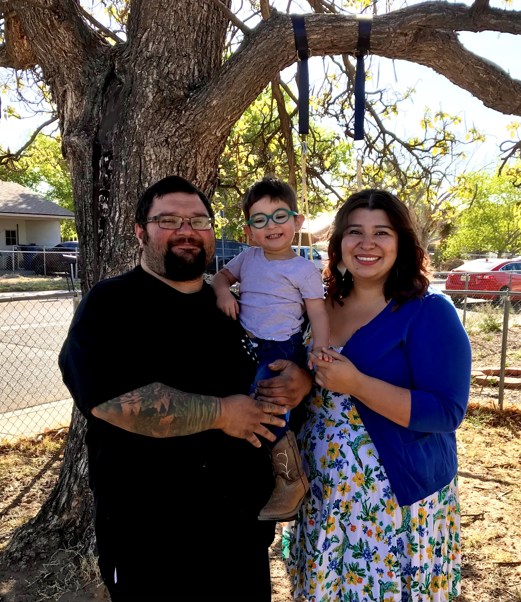

<div class="row">
    <div class="col-md-25 mx-auto mb-5 text-center">
        
        <div class="card text-black bg-light mb-5 mx-auto" style="">
            <div class="card-body">
                <p class="card-text">
                    Hi, my name is Acacia and I started Archer’s Brunch Yard in the crazy year of 2020. The idea began when I missed going to brunch on the weekends, so to help fill the void I made a simple quiche. I started adding more flavors to the quiche and then I started making fresh bread and scones.  Luckily my amazing partner Mark is always so supportive and willing be the first to try my <br>
                    I have worked in the food industry for over 10 years, working my way up to eventually be the lead cook in a wonderful café. I absolutely loved the challenge of making delicious new creations daily.<br>I left in 2018 to be an at-home mom to my son Archer.  And then 2020… To help pass the time and maintain my sanity I focused on my passion for cooking again. I started experimenting with new and different recipes. I then found that friends and family were also interested in eating dishes that broke them out of their pandemic routine as well. Soon after Archer’s Brunch Yard came to be! <br>
                    I am always searching for new inspiration while trying out new recipes to add to the menu. Thank you for all the continued support and I look forward to bringing brunch to your door!
                </p>
            </div>
        </div></div>
</div>    </div>